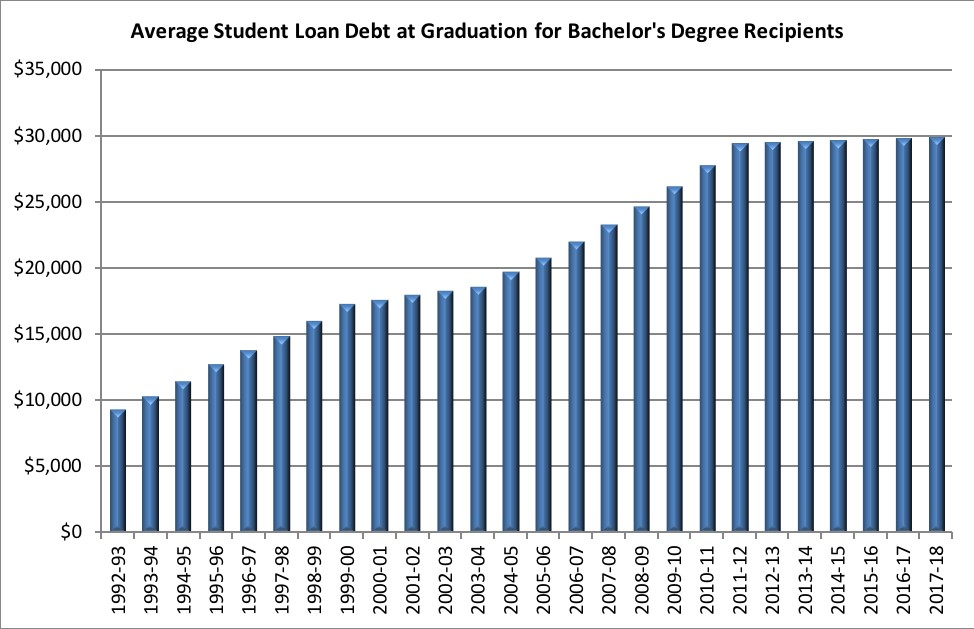
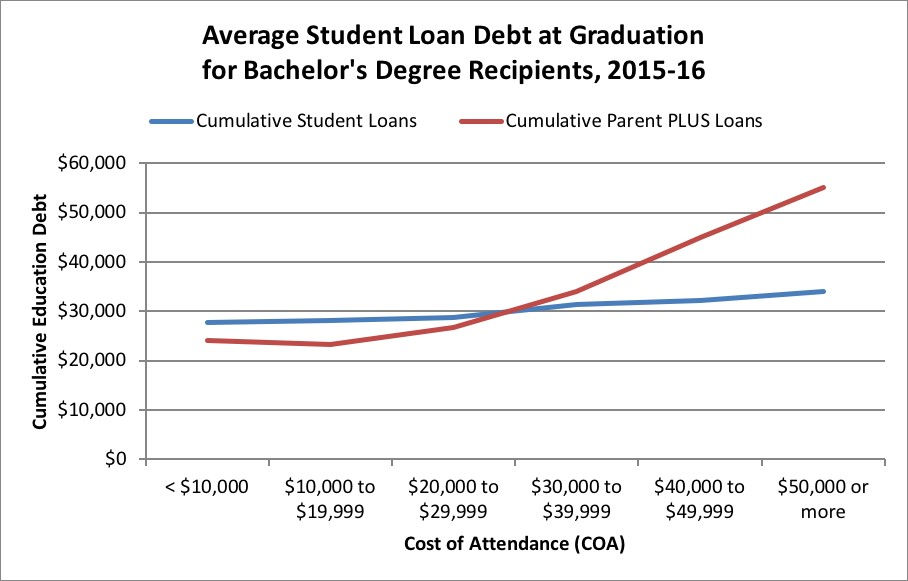
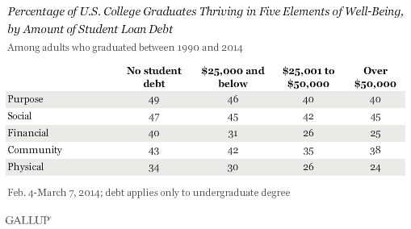

The total student debt in America was about $1.5 trillion in 2018. Student loan debt is now the second highest consumer debt category after only mortgage debt and higher than both credit cards and auto loans. If you are a student, researcher, donor, voter interested in finance and education statistics, the following student loan debt statistics can help you make more informed decisions in voting for potential presidental candidates in 2020 who support pro-student solution to this important societal problem.
According to the National Center for Education Statistics, there are more than 44 million borrowers who collectively owe $1.4 trillion in student loan debt in the U.S. The average student in the Class of 2016 has $37,172 in student loan debt.For students receiving bachelor’s degrees, the average debt load at graduation was $30,000 in 2017, which is based on data from the National Center for Education Statistics of the Federal Department of Education.
More than two-in-five (42%) Millennials between 18- and 29- years olds report that they, or someone in their household has student load debt; 48 percent indicated that they had no debt. Unlike most questions in our survey, there was no statistical difference based upon age, gender or political party affiliation.Do you, or does someone in your household, currently have student loan debt?
Regardless of whether or not they have debt, 57 percent of Millennials under 30 believe that student debt is a major problem for young people in the United States -- and another 22 percent believe its a minor problem. Overall, 79 percent say its a problem, four percent say it is not a problem. In total, 70 percent of our sample reported that financial circumstances played an important (41% very, 29% somewhat) role in their decision whether or not to pursue a college education.
Those who were more likely to say that financial circumstances were important are:
1. Community college and two-year college students (87% say it played an important role compared to 70% college students); and
2. 18- to 29- year old Blacks (52% say it played a very important role compared to 38% of Whites). When Millennials were asked who is most responsible for the rising amount of student debt in the U.S., 42 percent said colleges and universities, 30 percent the federal government -- students and state governments were held responsible by 11 and eight percent respectively.
Below table shows that increases in average student loan debt at graduation have slowed, based on an analysis of recently released federal government data. However, borrowing has shifted from students to parents, especially at higher-cost colleges, because more students are reaching federal student loan limits.
While student debt at graduation for bachelor’s degree recipients remains flat, Federal Parent PLUS loan debt continues to grow at an accelerating rate. The below table shows the long-term trend in cumulate increase of parental debt increased about $30,000 in 2011-12 to over $50,000, which is more than more than 20% increase.
Trends in student loan debt for graduate school completers is not much different. Average loan balances for students who completed a research or professional doctorate increased between 1999–2000 and 2015–16 for all degree programs. Average loan balances approximately doubled for those who completed medical doctorates (from $124,700 to $246,000, an increase of 97 percent), Ph.D.’s outside the field of education (from $48,400 to $98,800, an increase of 104 percent), and other non‑Ph.D. doctorates (from $64,500 to $132,200, an increase of 105 percent).
States with the most student loan debt
Not surprisingly, states with larger populations have higher aggregate student loan debt. California, Florida, Texas and New York are among the four highest states for total student loan debt outstanding among resident borrowers. California, Florida, Texas and New York represent more than 20% of all U.S. student loan borrowers.

New Hampshire has the highest average student loan debt per student ($36,367) from the Class of 2016.
Utah has the lowest average student loan debt per student ($19,975) from the Class of 2016.
As of 2018, more than 42 million student loan borrowers have student loan debt of $100,000 or less.
More than 2 million student loan borrowers have student loan debt greater than $100,000, with 415,000 of that total holding student loan debt greater than $200,000.
The largest concentration of student loan debt is $10,000 - $25,000, which accounts for 12.4 million student loan borrowers.
Social and Economic Implications of Student Debt
According to Gallup polls, college graduates who carry a high amount of student debt appear to face long-term challenges that stretch beyond just their finances. A new analysis of Americans who graduated college between 1990 and 2014 shows that graduates who took on the highest amounts of student debt, $50,000 or more, are less likely than their fellow graduates who did not borrow for college to be thriving in four of five elements of well-being: purpose, financial, community, and physical.
There are significant differences among these groups in the areas of financial and physical well-being. Higher debt signifies lower likelihood of thriving in these two areas of well-being. Graduates who went the deepest into debt to obtain their college degree, for instance, are far less likely to be thriving than graduates who took out no debt, by 15 percentage points in financial well-being and 10 points in physical well-being. The pattern is similar for graduates' sense of purpose, although those who borrowed over $50,000 are just as likely to be thriving in this element as those who borrowed $25,001 to $50,000. The relationship is less straightforward for graduates' community well-being, though again, graduates who took on the most debt for their degree are less likely to be thriving in this element than those who did not take out any loans for their undergraduate education.